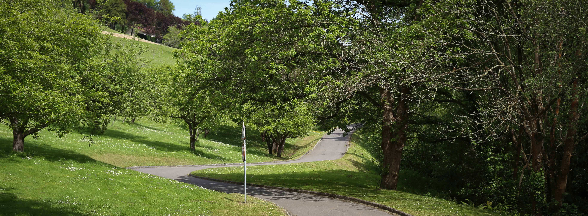

"Monte altu" de la ciudad de Oviedo.
 Parque "Purificación Tomás"
Parque "Purificación Tomás"
Con sus 213.667 metros cuadrados, esta situado desde el naranco
(monte
altu) hasta los barrios de la florida y Vallobín.
En él podrás encontrar | Naturaleza | Relajación | Desconexión.
Un lugar ideal para disfrutar con niños.

Martes de Campo
En compañía de familiares o amigos
Fiesta de prau en Oviedo.
 Martes de campo en Oviedo
Martes de campo en Oviedo
La fiesta de La Balesquida, donde acude la juventud, con música en vivo y espacio suficiente para
disfrutar de un picnic multitudinario.
Los lugares más codiciados son los que se encuentran a la sombra de los árboles centenarios.
Naturaleza
 Historia del parque
Historia del parque
El parque se creó en una antigua zona industrial, transformándola en un espacio verde para el disfrute de los ciudadanos. Esta renovación mejoró la calidad de vida
de los residentes y promovió la conservación de la biodiversidad local. El parque ha evolucionado para incluir diversas instalaciones recreativas y deportivas.
Purificación Tomás
 El refugio verde
El refugio verde
El parque es hogar de diversas aves como mirlos, petirrojos y carboneros, que llenan el aire con sus cantos. También, hay pequeños mamíferos como ardillas y
erizos, además de los conejos. También cuenta con un estanque donde se pueden observar patos y otras aves acuáticas.
Los árboles
DE PURIFICACIÓN TOMÁS


Es un extenso espacio verde en el cual ofrece vistas impresionantes del Naranco y de la Sierra del Aramo. Alberga una rica diversidad de especies arbóreas. Entre las más destacadas se encuentran: Eucaliptos, Cedros, Pinos, Abedules, Cerezos, Avellanos, Castaños, Manzanos, Robles... Este parque es un oasis de biodiversidad, ideal para disfrutar de la naturaleza y aprender sobre diferentes especies de árboles.
"Monte altu" 100 % a tu aire.
 Desconectar y Relajación.
Desconectar y Relajación.
Es un parque que nos permite desconectar, descansar, relajarse, despedirse del estrés y disfrutar de
las actividades al aire libre.
Dispone de sendas para pasear, merendero, zonas verdes y disfrutar de diferentes especies botánicas
como: Eucaliptos, Cedros, Piceas, Pinos, Abedules, Cerezos, Avellanos, Castaños, Robles, etc.
Es el lugar favorito de los Ovetenses para celebrar sus fiestas en familia y amigos, como el Martes
de Campo y San Mateo.

Parque de Purificación Tomás
Para respirar aire puro
Parque de Purificación Tomás
Plantación de árboles frutales
Parque de Purificación Tomás
Un lugar idóneo para una tarde de picnic
Parque de Purificación Tomás
Una buena entrada al cobijo de una buena sombra
Parque de Purificación Tomás
Banco con vistas
Explora y Disfruta
 Rutas y Actividades en Purificación Tomás
Rutas y Actividades en Purificación Tomás
Este parque ofrece varias
sendas y
rutas que permiten disfrutar de la naturaleza y de vistas espectaculares
del Naranco y de la Sierra del Aramo:
1-Senda Circular del Parque.
2-Ruta hacia el Monte Naranco.
3-Sendero de la Finca Monte Altu.
Sobre Nosotros
Somos un equipo apasionado de desarrolladores y diseñadores dedicados a crear experiencias web
únicas.
Nuestra misión es transformar la experiencia de visitar los parques por excelencia
de oviedo
en realidades digitales que sean visualmente atractivas, intuitivas y fáciles de ver.
© 2024 Parque Purificación Tomás. Todos lo derechos reservados.